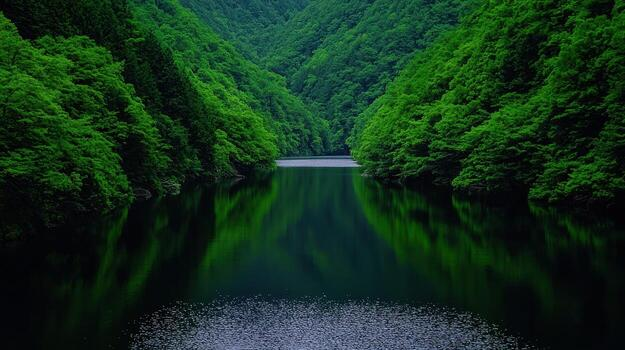

Lago di Braies
A natural lake is a large, inland body of standing water occupying a basin, typically filled by rainwater, rivers, or groundwater.

A natural lake is a large, inland body of standing water occupying a basin, typically filled by rainwater, rivers, or groundwater.